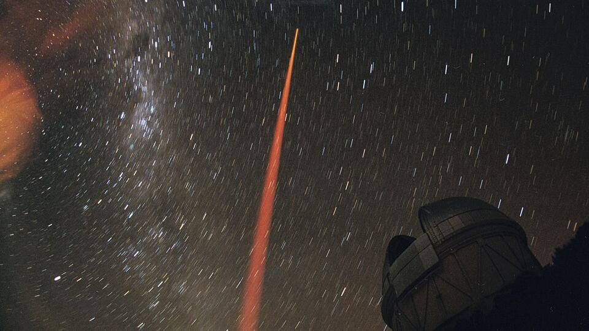

Gemini 4 Argon tanıtıldı: modelde ve erişimde neler var

Görsel: Laser Guide Star experiment at CTIO (noao-03583) · Maxime Boccas, CTIO/NOIRLab/ NSF /AURA/ · CC BY 4.0 · Wikimedia Commons
Google, yeni amiral gemisi yapay zekâ modeli Gemini 4 Argon'u 1 Ekim 2026'da duyurdu. Model, yazılım geliştirme, kurumsal bilgi işi ve siber güvenlik gibi uzun soluklu görevler için konumlandırıldı. Erişim şimdilik dar bir çevreyle sınırlı tutuluyor. Aşağıda duyurudan çıkan somut veriler, açıklanan API fiyatları ve henüz yanıtı olmayan başlıklar sıralanıyor.
Gemini 4 Argon ile ne tanıtıldı?
Webrazzi'nin aktardığına göre Gemini 4 Argon, Gemini model ailesinin yeni nesli olarak duyuruldu ve karmaşık iş yüklerine odaklanıyor. Google, modeli gerçek dünya yazılım mühendisliği, hukuk ve finans senaryolarında öne çıkarıyor. Büyük ölçekli kod tabanı geçişleri ile siber güvenlik savunması da duyuruda vurgulanan başlıklar arasında yer alıyor.
CHIP Online'ın derlediği teknik ayrıntılarda modelin, gerçek yazılım geliştirme görevlerini ölçen DeepSWE v1.1 testinde yüzde 77,9 sonuç aldığı belirtiliyor. Aynı kaynağa göre çıktı kapasitesi, önceki modellerdeki 64 bin token seviyesinden 1 milyon tokene çıkarıldı. Amaç, çok adımlı işlerin parçalara bölünmeden tek seferde tamamlanması olarak anlatılıyor.
CHIP Online ayrıca modelin, önceki sürümlerin gözden kaçırdığı kritik güvenlik açıklarını tespit ettiğini aktarıyor. Siber güvenlik vurgusu, erişimin ilk aşamada kimlere açıldığını da açıklıyor.
Gemini 4 Argon neden bu kadar arandı?
Aramaların ilk nedeni karşılaştırma merakı. Webrazzi, Gemini 4 Argon'un bazı kodlama ve siber güvenlik testlerinde OpenAI'ın Astra ve Anthropic'in Opus modelleriyle benzer seviyede sonuç verdiğini, buna karşılık dört kodlama testinin ikisinde rakiplerin gerisinde kaldığını yazıyor. Yani tablo tek yönlü bir üstünlük göstermiyor.
İkinci neden fiyat. CHIP Online'a göre lansman döneminde 1 milyon giriş tokeni 2 dolar, 1 milyon çıkış tokeni 10 dolar olarak belirlendi. Tanıtım dönemi kapandığında bu tutarların sırasıyla 4 ve 20 dolara çıkacağı aktarılıyor. Geliştiriciler için maliyet hesabını doğrudan değiştiren bir ayrım.
Üçüncü neden Google'ın kendi kullanımı. CHIP Online, şirketin modeli C ve C++ kodunu Rust'a taşımak, mühendislik işlerini yürütmek ve veri merkezi verimliliğini artırmak için içeride çalıştırdığını belirtiyor. Aynı kaynağa göre bu çalışmada 300 TiB'den fazla bellek geri kazanıldı; hedefin 1 PiB olduğu ifade ediliyor.
Gemini 4 Argon'da bilinenler ve henüz bilinmeyenler
Bilinen taraf şu: erişim kademeli ilerliyor. Webrazzi, modelin şimdilik yalnızca seçili siber güvenlik kuruluşlarına açıldığını yazıyor. CHIP Online ise sıranın Fairwind programındaki siber güvenlik uzmanlarından sonra ücretli API kullanıcılarına, ardından Google AI Ultra abonelerine geleceğini aktarıyor.
Bilinmeyen taraf daha geniş. Genel kullanıma açılış için bir tarih henüz açıklanmadı. Türkiye'de erişimin ne zaman ve hangi planla başlayacağı iki kaynakta da yer almıyor. Tüketiciye dönük ayrı bir abonelik ücreti duyurulmadı; açıklanan rakamlar API kullanımına ait.
Bağlam penceresinin giriş tarafı için de net bir sayı paylaşılmadı. Webrazzi'nin haberinde platform ve ülke listesi bulunmuyor, CHIP Online ise yalnızca çıktı kapasitesini veriyor.
Gemini 4 Argon için sırada ne var?
Takip edilecek ilk eşik, ücretli API erişiminin herkese açılması. İkincisi, modelin Google AI Ultra aboneliğine eklenme tarihi. Üçüncüsü, bağımsız testlerin yayımlanmasıyla kodlama performansındaki çelişkili tablonun netleşmesi.
Tanıtım dönemi fiyatlarının ne kadar süreceği de belirsiz. Bu süre dolduğunda giriş ve çıkış maliyetinin iki katına çıkacağı aktarıldığı için, uzun vadeli projelerde bütçe hesabı bu eşiğe göre kurulacak.
Takip etmek için
- Google'ın resmî duyuru blogu blog.google üzerindeki yapay zekâ bölümü
- gemini.google.com adresindeki model ve plan listesinde Argon'un görünüp görünmediği
- Webrazzi (webrazzi.com) ve CHIP Online (chip.com.tr) teknoloji bölümlerindeki takip haberleri
Sık sorulan sorular
Gemini 4 Argon Türkiye'de kullanılabiliyor mu?
Şu aşamada genel kullanıma açık değil. Model önce seçili siber güvenlik kuruluşlarına ve Fairwind programındaki uzmanlara verildi. Türkiye'de bireysel erişimin ne zaman başlayacağı henüz açıklanmadı.
Gemini 4 Argon'un fiyatı ne kadar?
CHIP Online'a göre lansman döneminde 1 milyon giriş tokeni 2 dolar, 1 milyon çıkış tokeni 10 dolar. Tanıtım dönemi sonrasında bu tutarların 4 ve 20 dolar olacağı belirtiliyor. Ayrı bir tüketici aboneliği duyurulmadı.
Gemini 4 Argon rakiplerinden daha iyi mi?
Webrazzi'ye göre bazı kodlama ve siber güvenlik testlerinde OpenAI Astra ve Anthropic Opus ile benzer sonuçlar alıyor, dört kodlama testinin ikisinde ise geride kalıyor. CHIP Online ise DeepSWE v1.1 testinde yüzde 77,9 sonucunu öne çıkarıyor.
Olgular şu yayıncıların haberlerinden derlendi: Webrazzi, CHIP Online. Metnin tamamı TrendSaphiens tarafından yazıldı; kaynaklarla kelime örtüşmesi %0.0 (eşik %5). Kaynaklarda olmayan bilgi eklenmedi.